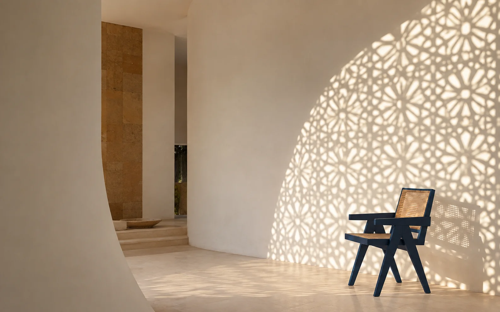
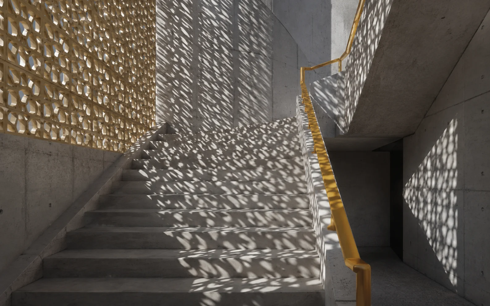
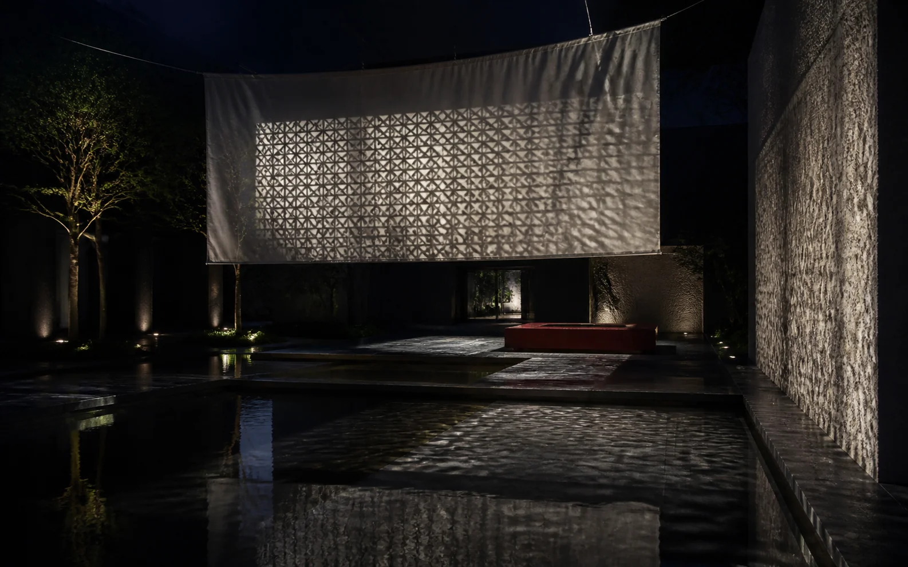

A three-part study asking how jaali geometry can move beyond an object and temporarily redraw modern architecture.

ROLEConcept + visual direction
FORMATSpatial image series
METHODGenAI world-building
STATUSSelf-initiated experiment
THE QUESTION
Can shadow become a material?
Jaali screens manage privacy, airflow and light at once. I was interested in the least permanent part of that system: the patterns that travel across a room as the day changes.
I set three rules for the visual world—quiet architecture, one strong geometric shadow and minimal colour—then tested the idea from intimate interior to public installation.

01 / MOVEMENT
Let circulation change the pattern.
The stairwell turns the shadow into a sequence. Each landing receives the geometry differently, suggesting that the visual identity could change with viewpoint and time rather than remain fixed.
Material contrastWarm perforated stone against unfinished concrete.
Single accentThe ochre handrail guides the eye without competing with the shadow.

02 / SCALE
Turn daylight logic into a night installation.
The final frame reverses the source: artificial light projects the pattern onto fabric, walls and water. It expands an architectural detail into an environment people could walk through.
Experience ideaA timed installation whose pattern slowly shifts through the evening.
Production thinkingProjection tests, surface studies and a light-position plan would control legibility.
WHAT I LEARNED
Constraints make experimentation feel like a designed system.
Keeping the palette and geometry restrained helped the three images belong together across very different scales. The exercise also moved the work from image generation toward experience thinking: how someone enters, moves through and remembers a space.